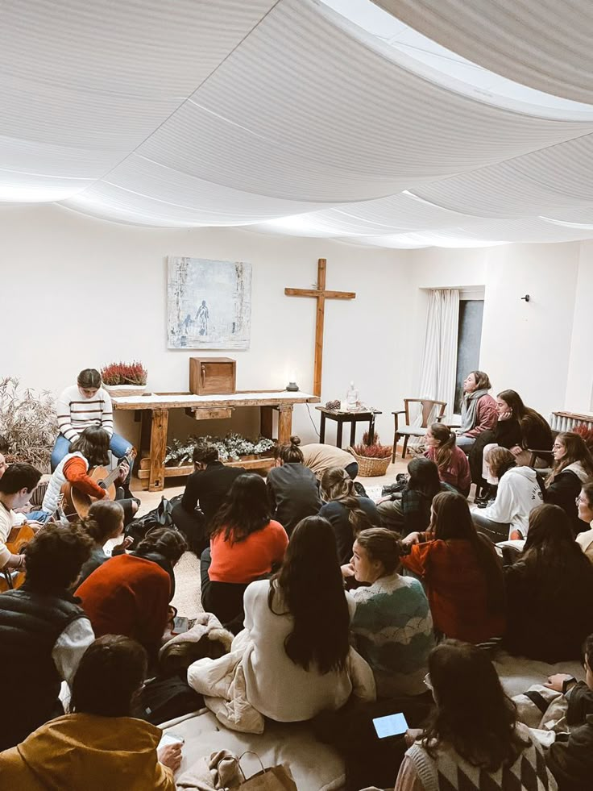
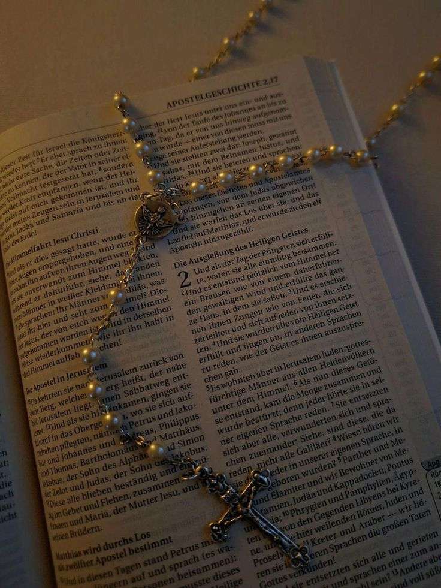
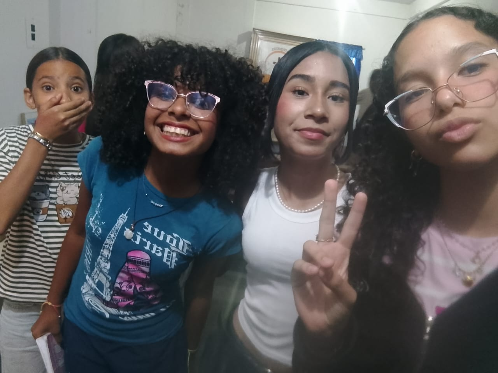

1) Encuentro Espiritual

Ofrece un espacio personal con Jesús, vivir la fe en comunidad y encontrar un propósito de vida.
2) Ambiente Sano

Ofrece un ambiente de pertenencia donde se crean redes de amistad en un espíritu de familia.
3) Liderazgo

Fomenta el compromiso activo, formando líderes cristianos y mejorando su vida cotidiana y responsabilidades diarias.